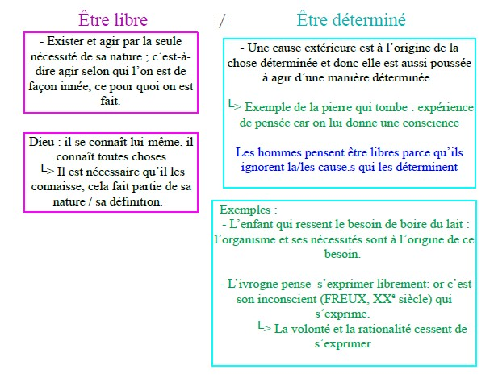
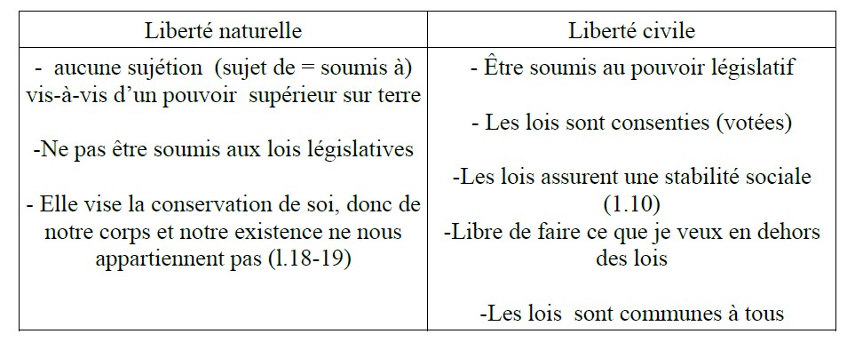
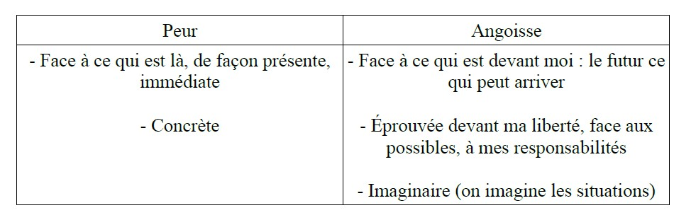
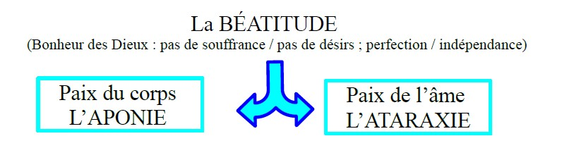
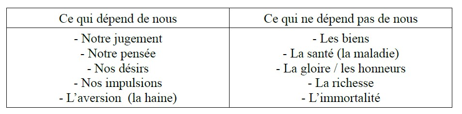

La liberté d'indépendance : c'est le fait de ne dépendre de rien (substance) ni de personne.
La liberté d'indifférence : la capacité pour un individu de choisir parmi plusieurs possibilités qui se présentent à lui, n'importe laquelle d'entre elles, en toute indifférence, sans avoir une raison particulière de faire tel ou tel choix.
Cette capacité démontre que l'Homme est doué d'un libre arbitre et qu'il n'est pas déterminé par avance dans ces choix. → Le dilemme de l'âne de BURIDAN selon laquelle un âne ayant aussi soif que faim, placé à égale distance d'un seau d'avoine et d'eau, serait mort de soif et de faim, faute de choisir par quoi commencer.
└> Expérience de pensée pouvant l'existence de la liberté d'indifférence. Pour René DESCARTES, il s'agit du plus bas degré de liberté.
Le libre arbitre : la capacité dont dispose la volonté d'effectuer un choix par elle-même (penser par soi-même), de choisir selon des motifs telle ou telle chose
⇒ Rationalité (nos choix sont argumentés) → S'oppose au déterminisme et ou fatalisme pour lesquels la volonté serait déterminée par des « forces » extérieurs que l'Homme ne maîtrise pas.
Autonomie (en grec : « αὐτονομία »)
du grec : autos → par soi-même nomos → la règle, la loi
└> se donner à soi-même sa propre loi → Penser par soi-même
└> Agir pour soi-même / engagement
└> La volonté sait résister aux penchants, à ses désirs, pour suivre la raison.
La liberté politique : → Les libertés politiques qui dépendent des États
En démocratie, elle se définit comme l'exercice de la souveraineté par le peuple, à travers les lois, lorsque celles-ci incarnent la volonté générale.
📚 Baruch SPINOZA, Traité Politique (La lettre à SCHULLER), XVIIe siècle
p. 266-267
📖 Extrait
Nous nous sentons libres à chaque fois que nous pouvons faire ce que nous voulons. Ce sentiment de liberté grandit, par exemple, sous l'effet de l'alcool : le timide se sent soudain libéré et devient loquace, l'avare oublie de compter son argent… Mais ne se sentent-ils pas d'autant plus libres qu'ils sont en réalité sous dépendance de la boisson ? Suffit-il de vouloir quelque chose pour vouloir librement ?
J'appelle libre, quant à moi, une chose qui est et agit par la seule nécessité de sa
nature ; contrainte, celle qui est déterminée par une autre à exister et à agir d'une
certaine façon déterminée. Dieu, par exemple, existe librement bien que nécessairement
parce qu'il existe par la seule nécessité de sa nature. De même aussi Dieu
5
se connaît lui-même librement parce qu'il existe par la seule nécessité de sa nature.
De même aussi Dieu se connaît lui-même et connaît toutes choses librement, parce
qu'il suit de la seule nécessité de sa nature que Dieu connaisse toutes choses. Vous
le voyez bien, je ne fais pas consister la liberté dans un libre décret mais dans une
libre nécessité.
10
Mais descendons aux choses créées qui sont toutes déterminées par des causes
extérieures à exister et à agir d'une certaine façon déterminée. Pour rendre cela
clair et intelligible, concevons une chose très simple : une pierre par exemple reçoit
d'une cause extérieure qui la pousse, une certaine quantité de mouvements et, l'impulsion
de la cause extérieure venant à cesser, elle continuera à se mouvoir nécessairement.
15
Cette persistance de la pierre dans le mouvement est une contrainte,
non parce qu'elle est nécessaire, mais parce qu'elle doit être définie par l'impulsion
d'une cause extérieure. Et ce qui est vrai de la pierre il faut l'entendre de toute chose
singulière, quelle que soit la complexité qu'il vous plaise de lui attribuer, si nombreuses
que puissent être ses aptitudes, parce que toute chose singulière est nécessairement
20
déterminée par une cause extérieure à exister et à agir d'une certaine
manière déterminée.
Concevez maintenant, si vous voulez bien, que la pierre, tandis qu'elle continue de
se mouvoir, pense et sache qu'elle fait effort, autant qu'elle peut, pour se mouvoir.
Cette pierre assurément, puisqu'elle a conscience de son effort seulement et qu'elle
25
n'est en aucune façon indifférente, croira qu'elle est très libre et qu'elle ne persévère
dans son mouvement que parce qu'elle le veut. Telle est cette liberté humaine que
tous se vantent de posséder et qui consiste en cela seul que les hommes ont conscience
de leurs appétits et ignorent les causes qui les déterminent. Un enfant croît librement
appéter le lait, un jeune garçon irrité vouloir se venger et, s'il est poltron,
30
vouloir fuir. Un ivrogne croit dire par un libre décret de son âme ce qu'ensuite,
revenu à la sobriété, il aurait voulu taire. De même un délirant, un bavard, et bien
d'autres de même farine, croient agir par un libre décret de l'âme et non se laisser
contraindre. Ce préjugé étant naturel, congénital parmi tous les hommes, ils ne
s'en libèrent pas aisément. Bien qu'en effet l'expérience enseigne plus que suffisamment
35
que, s'il est une chose dont les hommes soient peu capables, c'est de régler
leurs appétits et, bien qu'ils constatent que partagés entre deux affections contraires,
souvent ils voient le meilleur et font le pire, ils croient cependant qu'ils sont libres,
et cela parce qu'il y a certaines choses n'excitant en eux qu'un appétit léger, aisément
maîtrisé par le souvenir fréquemment rappelé de quelque autre chose.

📖 Définition : Appétit (chez SPINOZA) : c'est un conatus qui se rapporte aussi bien au corps qu'à l'intellect. Conatus : une chose en tant qu'elle s'efforce de persévérer dans son être, c'est-à-dire tout ce qu'elle peut faire pour déployer son être.
→ L'Homme n'agit ou ne décide pas selon sa rationalité, la plupart du temps, mais selon ses désirs.
Ainsi, il est poussé à désirer quelque chose non pas parce qu'elle est bonne, mais c'est parce qu'il la désire qu'il la trouve bonne.
📌 « Nous ne désirons pas une chose parce que nous la jugeons bonne, mais nous la jugeons bonne parce que nous la désirons » — SPINOZA
→ Lien liberté et désir : les deux s'opposent car on ne connaît pas l'origine de nos désirs (la plupart du temps nous n'en sommes pas les auteurs) + le désir est sans fin, incontournable.
Donc suivre ses désirs, c'est renoncer à sa liberté.
📚 Iris MURDOCH, La souveraineté du bien, XXe siècle
p. 264-265
📖 Extrait
⏳ Le contenu de ce texte n'est pas encore disponible. Veuillez revenir plus tard.
Thèse : La liberté est liée à notre niveau de connaissance de soi et du monde qui nous entoure, ils influencent, orientent nos choix. C'est cette connaissance qu'elle nomme « attention », mais souvent nos choix sont déjà préorientés par les valeurs morales de notre société.
Problématique : En quoi la connaissance du monde environnant permet d'exercer notre liberté ?
Arguments :
Savoir qui nous sommes permet des choix plus authentiques.
On est contraint parce que l'on voit le monde par le niveau de connaissances que l'on possède.
L'autonomie et la responsabilité personnelles (morale) éclairent nos choix.
📚 ARISTOTE, Éthique à Nicomaque, IVe siècle av. J.-C.
p. 282-283
📖 Extrait
⏳ Le contenu de ce texte n'est pas encore disponible. Veuillez revenir plus tard.
Thèse : Il existe des degrés de responsabilité en ce qui concerne les actes volontaires.
Problématique : Comment évaluer la responsabilité d'un acte volontaire (acte librement réalisé) ?
Arguments :
Distinction entre volontaire et involontaire. Involontaire : fait sous la contrainte ou par ignorance. Volontaire : accompli librement mais aussi, selon les cas, par crainte d'un grand mal.
La responsabilité d'un acte dépend du degré de volontaire (ex : menace de tuer des proches).
└> Sous-entend que notre liberté n'est jamais totale, il y a des contraintes.
On doit réfléchir au cas par cas établir des sanctions par rapport au degré de responsabilité. (ex : le capitaine d'un navire marchand subissant une tempête)
📚 Karl MARX, Le Capital, XIXe siècle
p. 292
📖 Extrait
⏳ Le contenu de ce texte n'est pas encore disponible. Veuillez revenir plus tard.
Thèse : L'ouvrier est asservi par le maître, même s'il existe un contrat de travail et un salaire.
Problématique : La liberté de l'ouvrier est-elle possible dans le cadre du travail ?
Arguments :
L'histoire réelle montre que l'Homme est sans cesse asservi, dominé par d'autres, contrairement à ce que décrivent les manuels officiels qui parlent du droit au travail.
Le rapport entre l'ouvrier et le patron est toujours du profit de ce dernier, malgré qu'il y ait un contrat encadré par le droit et un salaire.
L'ouvrier s'est rendu dépendant du patron en lui abandonnant son savoir-faire.
⇒ 2 Références :
└> HEGEL : dialectique du maître et de l'esclave
└> ARISTOTE : en puissance / en acte
📚 Alexandre KOJÈVE, Commentaire de la Phénoménologie de l'Esprit de HEGEL, XXe siècle
p. 290
📖 Extrait
⏳ Le contenu de ce texte n'est pas encore disponible. Veuillez revenir plus tard.
Georg Wilhelm Friedrich HEGEL met en scène deux individus, deux consciences : l'un prend le statut d'Esclave et l'autre celui de Maître.
→ L'Esclave est celui qui a renoncé à sa liberté car il a peur de mourir (prisonnier de guerre).
→ Le Maître est celui qui affirme sa liberté et l'exprime en dominant le prisonnier.
→ L'Esclave, en répondant aux besoins du Maître, va acquérir des compétences, des connaissances nouvelles et se rendre ainsi indispensable au Maître.
└> Grâce à ces connaissances et savoir-faire, l'Esclave transforme le monde et se transforme lui-même, gagnant ainsi en liberté. └> Le travail libérateur : le travail permet à l'Esclave d'agir sur sa nature et sur la nature (travail = transformation de la nature).
→ Renversement : Le Maître va devenir dépendant de l'Esclave.
└> Le Maître va devoir reconnaître comme sujet, comme une conscience à part entière, l'Esclave.
→ La dialectique est donc la reconnaissance réciproque de deux consciences.
📚 John LOCKE, Seconde Traité du gouvernement civil, XVIIe siècle
p. 290
📖 Extrait
⏳ Le contenu de ce texte n'est pas encore disponible. Veuillez revenir plus tard.
📖 Définition : Liberté naturelle : pouvoir qu'à l'Homme de développer ses facultés à faire ce qui lui est agréable et utile. Dans la société, cette liberté est limitée par les lois morales et juridiques.
Pour John LOCKE, cette liberté naturelle permet à l'Homme d'assurer sa conservation (= demeurer en vie) et celle d'autrui.
Thèse : La liberté de l'Homme réside dans les lois de la nature qui consiste à se conserver soi-même et autrui.
Problématique : Peut-on être libre en étant soumis à une loi naturelle ou juridique ?
Arguments :
Distinction entre la liberté naturelle et la liberté civile (droit / devoir).
La liberté naturelle oblige l'Homme à ne pas se soumettre à un pouvoir absolu et arbitraire (monarchie).
La liberté implique de ne pas disposer de son propre corps, de sa propre vie.

📚 Jean-Paul SARTRE, L'Être et le Néant, XXe siècle
p. 272
📖 Extrait
⏳ Le contenu de ce texte n'est pas encore disponible. Veuillez revenir plus tard.
→ Thème de l'angoisse différent de la peur
Thèse : L'angoisse est éprouvée face au vertige de la liberté, de tous les possibles qui s'annoncent devant nous.
Problématique : Comment peut-on distinguer l'angoisse de la peur ?
Arguments :
Distinction entre l'angoisse et la peur.
La peur entraîne l'angoisse.

📚 Emmanuel KANT, Critique de la raison pratique, XVIIIe siècle
p. 280
📖 Extrait
⏳ Le contenu de ce texte n'est pas encore disponible. Veuillez revenir plus tard.
Thèse : La liberté exige la morale, mais surtout de résister à nos désirs.
Problématique : Comment s'éprouve notre liberté ?
Arguments :
Souvent l'individu se cache derrière la force de ses désirs, pour ne pas les maîtriser.
Or, la morale fonde la liberté [exemple].
La liberté s'éprouve dans notre résistance à nos désirs ⇒ dépendance à nos « passions » et à nos « penchants ».
A contrario, il est impossible à l'Homme de se libérer de sa peur de mourir.
Emmanuel KANT propose l'idée que la loi morale vient contrecarrer cette peur de mourir.
📚 Jean-Paul SARTRE, L'Être et le Néant, XXe siècle
p. 288
📖 Extrait
⏳ Le contenu de ce texte n'est pas encore disponible. Veuillez revenir plus tard.
Thèse : Sartre remet en question l'idée selon laquelle nous ne pouvons pas changer notre situation, en affirmant notre liberté définie, les limites de notre existence.
Problématique : Comment remet-il en question le déterminisme ?
Arguments :
Exposition des arguments en faveur du déterminisme.
L'efficacité de la liberté sur les obstacles extérieurs qui peuvent s'imposer comme limites.
└> C'est lorsque ma liberté s'exerce, se déploie, qu'elle envisage des éléments environnants comme des obstacles, des limites, au but / à la fin qu'elle s'est fixée.
📚 ÉPICTÈTE, Entretiens, Ier siècle
p. 274
📖 Extrait
⏳ Le contenu de ce texte n'est pas encore disponible. Veuillez revenir plus tard.
Thèse : À partir de la distinction entre les choses qui dépendent de nous et celles qui n'en dépendent pas, notre liberté réside dans ce sur quoi nous pouvons agir : nos jugements, nos pensées, nos opinions, nos désirs.
Problématique : Quelles sont les limites de notre indépendance / notre liberté ?
Arguments :
Liste de ce qui ne dépend pas de nous.
Thèse : nous ne pouvons agir que sur les choses qui dépendent de nous.
ÉPICTÈTE
Il a suivi le mouvement philosophique stoïcien (un stoïcien / le stoïcisme).
→ L'objectif de la philosophie stoïcienne : le Bonheur

Les stoïciens, pour accéder au bonheur, vont tenter de détruire tous désirs en l'Homme, en agissant uniquement sur les choses qui dépendent de lui.
⇒ Pour atteindre le bonheur comme les dieux, mais pas l'immortalité.

📚 René DESCARTES, Méditations métaphysiques, XVIIe siècle
p. 270
📖 Extrait
⏳ Le contenu de ce texte n'est pas encore disponible. Veuillez revenir plus tard.
Thèse : Nous sommes limités (exemple : la mémoire, l'imagination) contrairement à Dieu, mais pas notre volonté qui nous permet d'être libre.
Problématique : Est-ce que nous sommes libres alors même que nos facultés sont limitées ?
Arguments :
→ L'entendement plus la volonté me permettent d'être libre.
└> L'erreur ne fait pas partie de notre entendement. Entendement (de DESCARTES) : Faculté de connaître, de comprendre, de percevoir, de saisir l'intelligible (compréhension par l'intellect), par opposition aux sensations. Volonté (de DESCARTES) : faculté infinie par laquelle l'Homme ressemble à Dieu.
→ Elle me permet de choisir de nier ou affirmer
└> Expression de ma liberté
📄 Veuillez trouver la version PDF de ce cours ci-dessous 😇